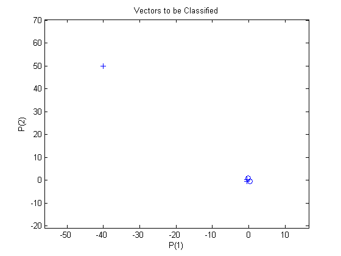
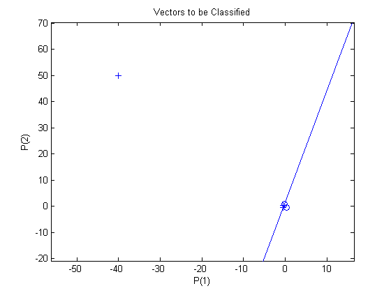
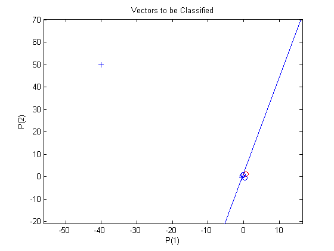
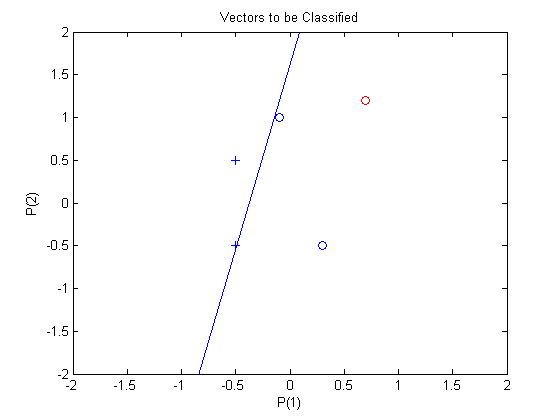

Outlier Input Vectors
A 2-input hard limit neuron is trained to classify 5 input vectors into two categories. However, because 1 input vector is much larger than all of the others, training takes a long time.
Copyright 1992-2002 The MathWorks, Inc. $Revision: 1.18 $ $Date: 2002/03/29 19:36:10 $
Each of the five column vectors in P defines a 2-element input vectors, and a row vector T defines the vector's target categories. Plot these vectors with PLOTPV.
P = [-0.5 -0.5 +0.3 -0.1 -40; -0.5 +0.5 -0.5 +1.0 50]; T = [1 1 0 0 1]; plotpv(P,T);
Note that 4 input vectors have much smaller magnitudes than the fifth vector in the upper left of the plot. The perceptron must properly classify the 5 input vectors in P into the two categories defined by T.
NEWP creates aperceptron. The first argument specifies the expected ranges of two inputs. The second argument determines that there is only one neuron in the layer.
net = newp([-40 1;-1 50],1);
Add the the neuron's initial attempt at classification to the plot.
The initial weights are set to zero, so any input gives the same output and the classification line does not even appear on the plot. Fear not... we are going to train it!
hold on
linehandle = plotpc(net.IW{1},net.b{1});ADAPT returns a new network object that performs as a better classifier, the network output, and the error. This loop allows the network to adapt for 3 passes, plots the classification line, and continues until the error is zero.
E = 1; net.adaptParam.passes = 3; while (sse(E)) [net,Y,E] = adapt(net,P,T); linehandle = plotpc(net.IW{1},net.b{1},linehandle); drawnow; end
Note that it took the perceptron many epochs to train. This a very long time for such a simple problem. The reason for the long training time is the outlier vector. Despite the long training time, the perceptron still learns properly and can be used to classify other inputs.
Now SIM can be used to classify any other input vector. For example, classify an input vector of [0.7; 1.2].
A plot of this new point with the original training set shows how the network performs. To distinguish it from the training set, color it red.
p = [0.7; 1.2]; a = sim(net,p); plotpv(p,a); circle = findobj(gca,'type','line'); set(circle,'Color','red');

Turn on "hold" so the previous plot is not erased. Add the training set and the classification line to the plot.
hold on;
plotpv(P,T);
plotpc(net.IW{1},net.b{1});
hold off;Finally, zoom into the area of interest.
The perceptron correctly classified our new point (in red) as category "zero" (represented by a circle) and not a "one" (represented by a plus). Despite the long training time, the perceptron still learns properly. To see how to reduce training times associated with outlier vectors, see the "Normalized Perceptron Rule" demo.
axis([-2 2 -2 2]);